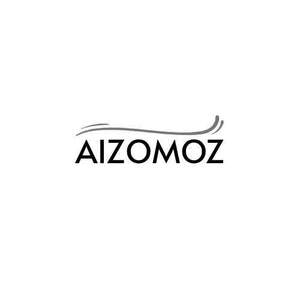

Trade Mark Journal No.2025/044 31 October 2025
UK00004280251 19 October 2025 (3)

- Class 3
- Make up; fake eye lashes; fake nails; eye liner; eye make up; blusher; eye maskara; lipstick; lip gloss; Non-medicated cosmetics and toiletry preparations; non-medicated dentifrices; perfumery, essential oils; bleaching preparations and other substances for laundry use; cleaning, polishing and abrasive preparations; perfumes; hair lotions; adhesives for affixing false hair; adhesives for cosmetic purposes; balms other than for medical purposes; beauty masks; cosmetic creams; cosmetic kits; cosmetic pencils; cosmetic preparations for skin care; cosmetic preparations for eyelashes; eyeliners; cosmetics for the eyes; eye make-up; eyeliner pencils; liquid and pencil combination eyeliner; liquid eyeliners; eye shadows; eye concealer; eye creams; eye contour beauty masks; eye cream for cosmetic use; eye gel cooling patches; eyebrow cosmetics; eyebrow styling gel; eyebrow pencils; eyebrow colors in the form of pencils and powders; eyelash extensions; false eyelashes; mascara; adhesives for affixing false eyelashes; false nails; lip glosses; lipstick cases; lipsticks; non-medicated lip care preparations; lip liners; lip tint (cosmetics); lip gloss palettes; lip cosmetics; lotions for cosmetic purposes; make-up; make-up powder; make-up preparations; make-up removing preparations; massage gels other than for medical purposes; nail art stickers; nail care preparations; nail polishes; oils for cosmetic purposes; perfumery; petroleum jelly for cosmetic purposes; sun-tanning preparations; adhesives for affixing false nails; blushers; blush pencils; body and beauty care preparations for cosmetic purposes; body art stickers; cleansing creams; concealers for the skin, face and body; concealers for spots and blemishes for the skin, face and body; cosmetic face powder; cream foundations; liquid foundations; creamy rouges; decorative cosmetics; exfoliating scrubs for cosmetic purposes the face, feet, hands and body; make-up primers; nail tips; removable tattoo transfers for cosmetic purposes; toners for cosmetic use; make up setting sprays; sprays for cosmetic purposes for the face, feet, hands and body; toiletry preparations; liquid cosmetics; face cleansers; face cream; face gels; face oils; face moisturizers; face washes; face wipes; loose face powder; pressed face powder; face lifting tapes for cosmetic use; cosmetic glitter powders; creamy face powder.
AIAUK LIMITED